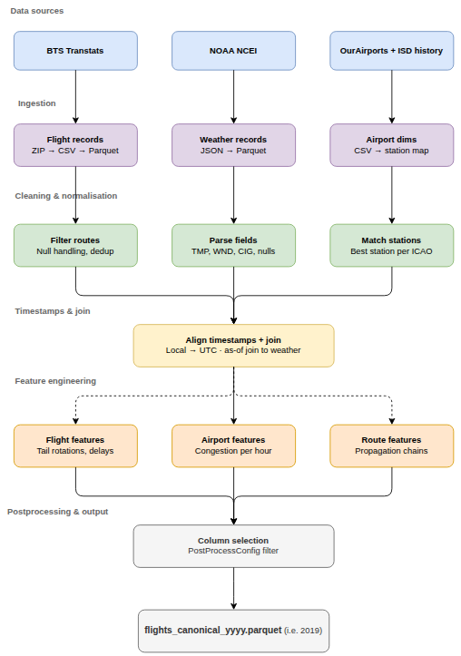
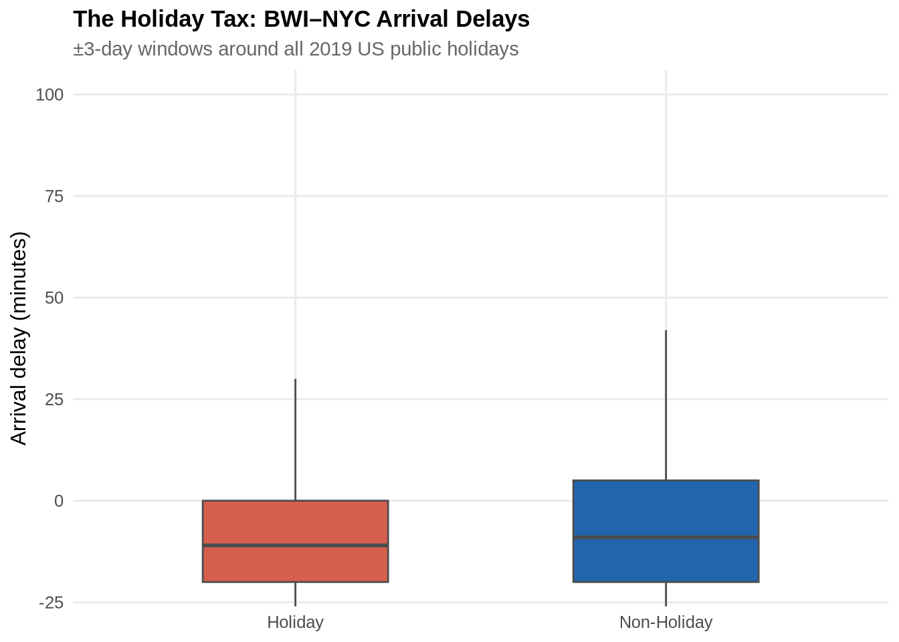
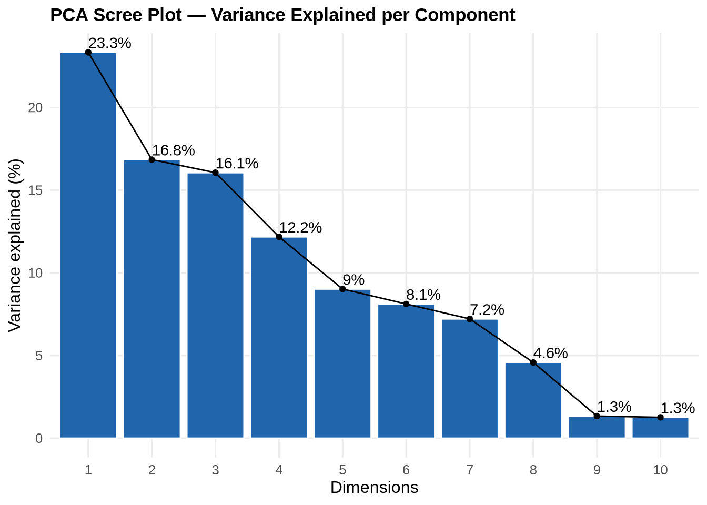
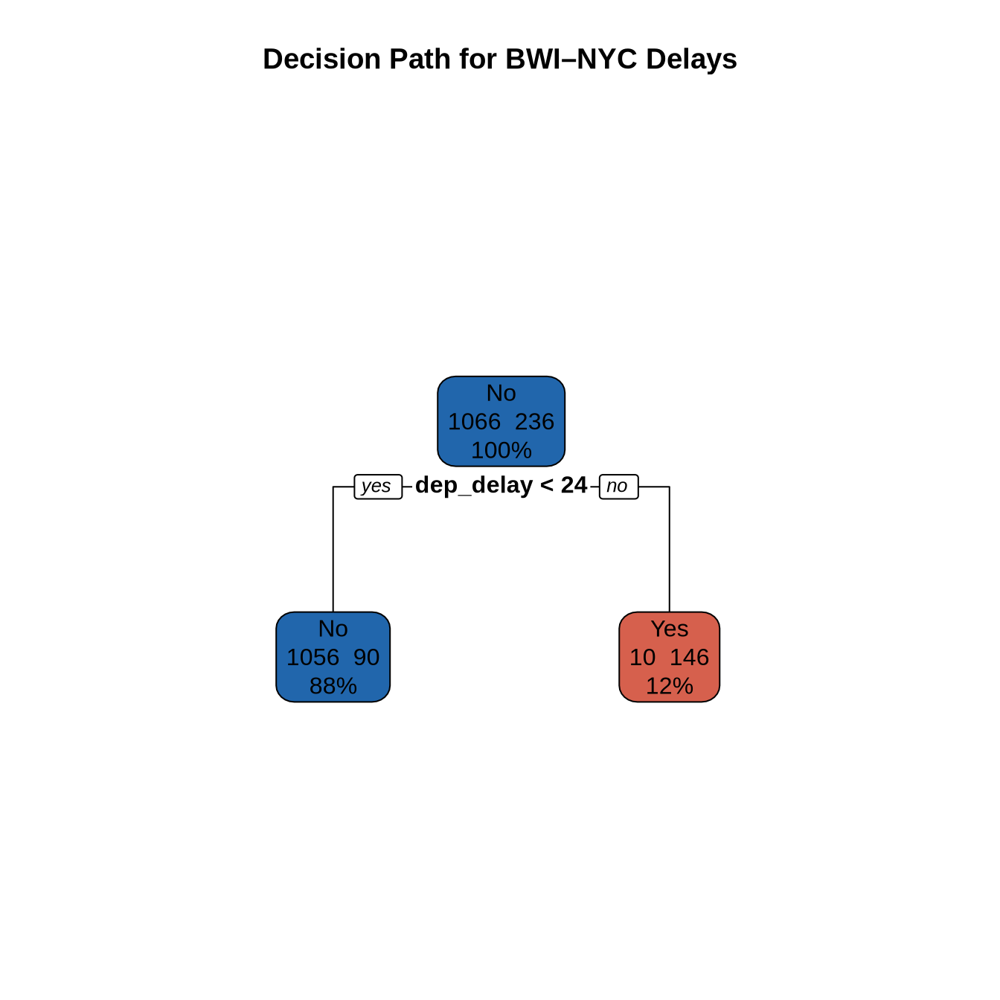
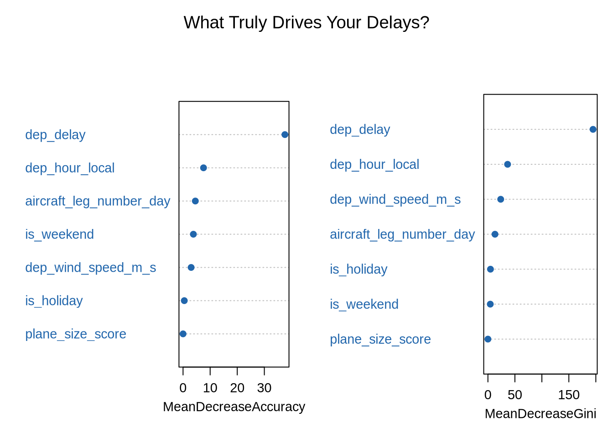
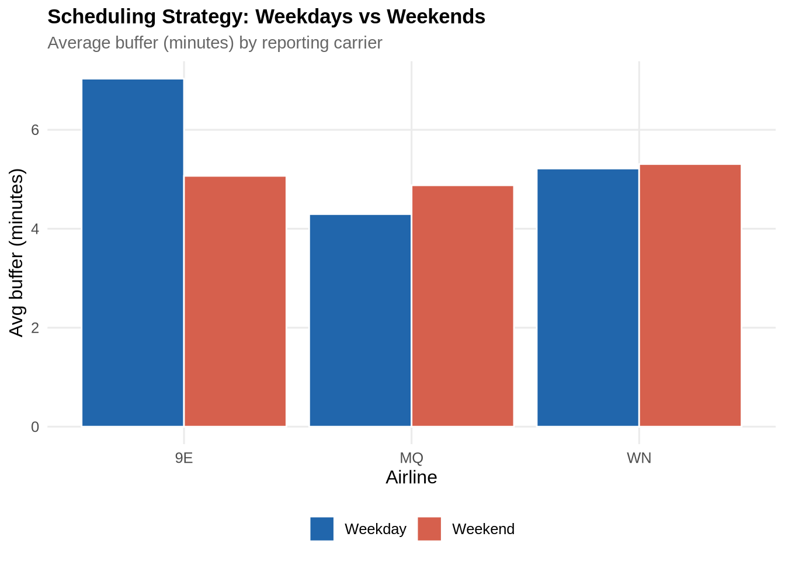
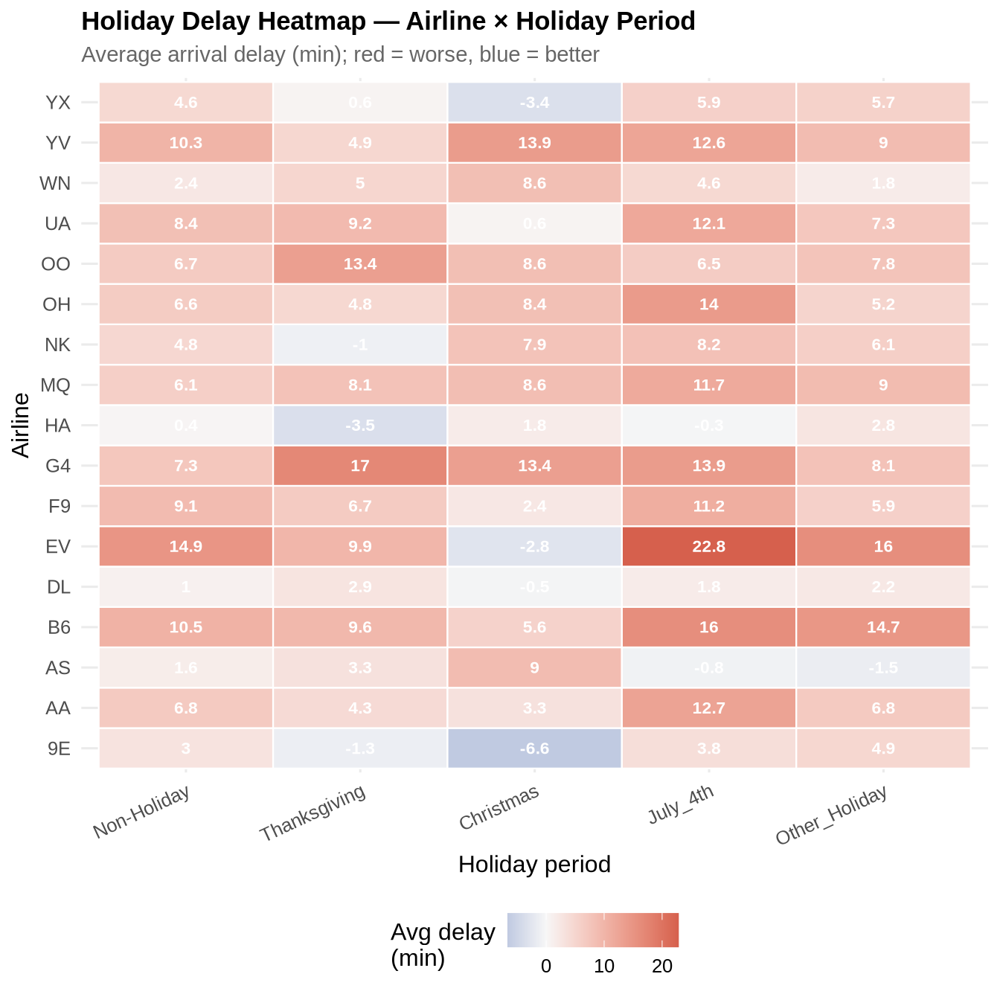
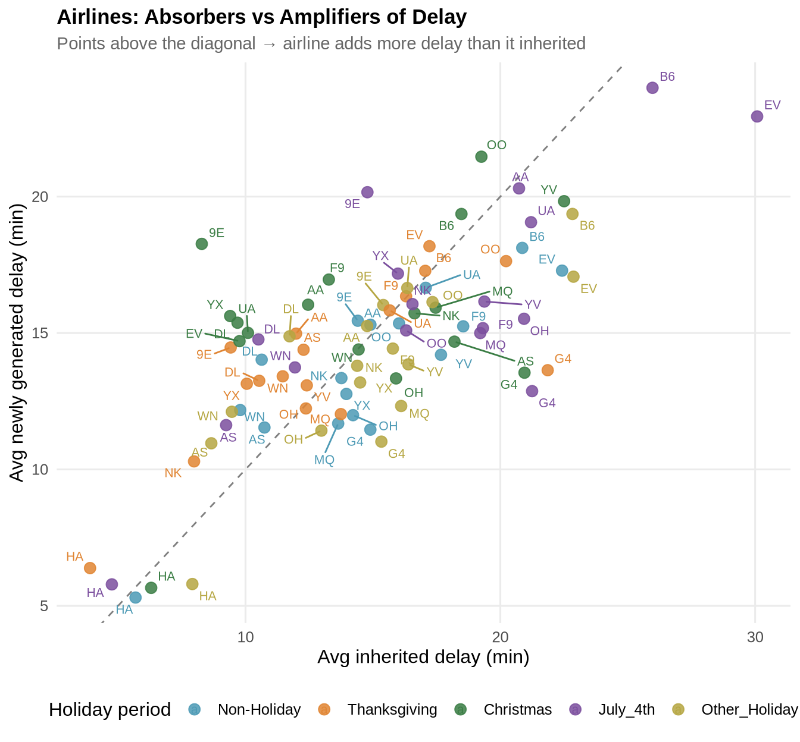

Machine Learning Pipeline
Purpose of This Page
This page provides the code and setup needed to run the machine learning workflow in a repeatable way from start to finish. Its purpose is to help anyone on the team reproduce the analysis, rerun experiments, and understand how the project is organized so results can be generated consistently across different machines. The shared-notebooks are more for exploratory work and prototyping, while this page is meant to be a more polished and reproducible version of the code that can be easily rerun by anyone on the team.
Setups and Pulling Code
Project Setup and Environnement
To run the code on this site, you will need both the project environment and Quarto set up correctly. The Conda environment manages the Python and R dependencies used throughout the project, while Quarto is used to render the notebooks and project pages into a reproducible website format. Some assumptions are made here such as you already have R, Python, git and Conda installed on your machine. If you do not have these installed, please refer to the official documentation for each tool to get them set up before proceeding.
- Clone the project
Start by cloning the repository to your local machine and moving into the project directory.
git clone <repo-url>
cd <repo-folder>- Create the Conda environment
This project uses a Conda environment to keep package versions consistent across the team. Build the environment from the provided environment file.
conda env create -f environment.ymlThen activate it:
conda activate or568_ml_project- Run the ML Pipeline
Option 1: Run this notebook in RStudio or Jupyter with R kernel. Make sure to have the Conda environment activated before launching your IDE.
Option 2: Use quarto render path/to/notebook.qmd to render the notebook into HTML. This will execute the code and generate the output in a reproducible way.
Option 3 (not recommended): Render the entire site using Quarto. This will execute all notebooks and generate the HTML pages.
quarto render
quarto previewData Pipeline
The pipeline integrates three independent data streams — Bureau of Transportation Statistics (BTS) on-time performance records, NOAA Global Surface Hourly weather observations, and airport reference dimensions — into a single analytical dataset suitable for delay prediction modelling. Figure 1 provides a schematic overview of each stage. The sections below describe each stage in turn.
Running the Data Pipeline
NoteBig Data Warning
The flight dataset is quite large (over 7 million records for a single year). Running the pipeline_main.py to build it on a laptop with 32 GB of RAM crashed. In order to overcome this I had to use my tower desktop machine with 96 GB of RAM to run the data pipeline. If you want to run the data pipeline yourself, I would recommend using a machine with at least 64 GB of RAM, but ideally 96-128 GB or more. Alternatively, you can use cloud computing resources such as AWS EC2 instances with high memory capacity to run the data pipeline without crashing.
If you are interested in generating the original data you can run the data pipeline with the following command:
python3 run_canonical_years.py --year 2019This assumes you followed the project setups above and are in the data_pipeline directory.
Data Loading and Cleaning
The following setup pulls the data from S3 using the load_flight_data() function defined in shared-notebooks/common_utils/r/utils.r. This function abstracts away the details of connecting to S3 and loading the Parquet file, allowing us to focus on the data processing and modeling steps. Currently a policy is setup in the S3 bucket to allow public read access, so no credentials are needed to load the data. Unfortunately, this will not be the case in the future and will only remain here for the duration of the project. In the Medallion nomenclature this would be considered our bronze level data, which is the raw data that we will be using on our feature engineering pipeline.
If you want to see what is there you can reach the URL provided in the load_flight_data function and enter that into a browser. That will output some XML the name of the files are nested under Contents/Key.
However, if you would like to regenerate the exact data we used you can run our data pipeline code in the data_pipeline directory. See the pipeline_main.py and `run_canonical_years`` as the entry points for the data pipeline for more details.
NoteBig Data Warning
This project uses lazy-loaded data via Apache Arrow. Lazy loading means that when you open a dataset, no data is actually read into memory — instead you get a query object that represents the data. Operations like filter() and select() are pushed down to the data source and only execute when you explicitly call collect(), at which point only the rows and columns you actually need are pulled into memory. This makes working with large datasets fast and memory efficient.
The setup below loads all required packages via load_project_packages(), defined in utils.r, which installs any missing packages and attaches them to the session. Flight data is loaded from the project’s data source and cached locally as a parquet file at data/flights_raw.parquet on first run — subsequent renders skip the 30-40 second load and read directly from the local cache instead. To refresh the data, delete data/flights_raw.parquet and re-render.
For anyone extending this project, I strongly recommend sticking to Arrow in R or switching to Polars in Python rather than pandas. Pandas loads everything into memory eagerly, which becomes a bottleneck quickly on datasets of this size. Arrow and Polars are both built around the same columnar memory format, are significantly faster, and support the same lazy evaluation pattern used here — filter and select on the lazy frame first, then collect only what you need.
The setup below loads all required packages via load_project_packages(), defined in utils.r, which installs any missing packages and attaches them to the session. Flight data is loaded from the project’s data source and cached locally as a parquet file at data/flights_raw.parquet on first run — subsequent renders skip the 30-40 second load and read directly from the local cache instead. To refresh the data, delete data/flights_raw.parquet and re-render. flights_raw is returned as an Arrow lazy frame, meaning no data is held in memory until explicitly collected downstream.
source("shared-notebooks/common_utils/r/utils.r") # common utils
load_project_packages()
set.seed(42)if (!file.exists("data/flights_raw.parquet")) {
message("No cache found, loading and writing parquet...")
load_flight_data() %>%
collect() %>%
janitor::clean_names() %>%
arrow::write_parquet("data/flights_raw.parquet")
message("Cache written to data/flights_raw.parquet")
}
flights_raw <- arrow::open_dataset("data/flights_raw.parquet")Holiday Analysis
# Define 2019 Federal Holidays
us_holidays_2019 <- as.Date(c(
"2019-01-01", "2019-01-21", "2019-02-18", "2019-05-27",
"2019-07-04", "2019-09-02", "2019-10-14", "2019-11-11",
"2019-11-28", "2019-12-25"
))
# Generate travel windows (+/- 3 days around each holiday)
holiday_windows <- map(us_holidays_2019, ~ seq(.x - 3, .x + 3, by = "day")) %>%
flatten_dbl() %>%
as.Date(origin = "1970-01-01")
df_final <- flights_raw %>%
filter(origin == "BWI",
dest %in% c("JFK", "EWR"),
!is.na(dep_delay),
!is.na(flight_date),
!is.na(origin),
!is.na(dest)) %>%
select(
flight_date, arr_delay, dep_delay, carrier_delay, weather_delay,
dep_hour_local, day_of_week, month,
dep_temp_c, dep_wind_speed_m_s, dep_ceiling_height_m,
reporting_airline, taxi_out,
prev_arr_delay, turnaround_minutes, aircraft_leg_number_day,
crs_elapsed_time, actual_elapsed_time, distance
) %>%
collect() %>% # collect before any mutates
mutate(
across(c(prev_arr_delay, weather_delay, carrier_delay), ~replace_na(., 0)),
flight_date_clean = as.Date(as.character(flight_date), format = "%Y-%m-%d")
) %>%
filter(!is.na(arr_delay), !is.na(dep_delay)) %>%
mutate(
is_delayed = as.factor(ifelse(arr_delay >= 15, "Yes", "No")),
is_weekend = as.factor(ifelse(day_of_week %in% c(6, 7), "Yes", "No")),
is_rush_hour = as.factor(ifelse(dep_hour_local %in% c(7, 8, 16, 17, 18), "Yes", "No")),
reporting_airline = as.factor(reporting_airline),
buffer = crs_elapsed_time - actual_elapsed_time,
is_holiday = as.factor(ifelse(as.Date(flight_date_clean) %in% holiday_windows, "Holiday", "Non-Holiday")),
plane_size_score = case_when(
distance > 1500 ~ "Large",
distance > 500 ~ "Medium",
TRUE ~ "Small"
)
)
# Output Holiday Frequency Table
holiday_freq <- as.data.frame(table(df_final$is_holiday))
names(holiday_freq) <- c("Holiday Status", "Count")
holiday_freq %>%
knitr::kable(caption = "Flight Count by Holiday Status") %>%
kable_styling(
bootstrap_options = c("striped", "hover", "condensed"),
full_width = FALSE,
position = "left"
)| Holiday Status | Count |
|---|---|
| Holiday | 290 |
| Non-Holiday | 1497 |
Part 3 — Delays by Holiday Status
Arrival delays are compared inside and outside a ±3-day window around every 2019 US public holiday. Outliers above 100 minutes are clipped to focus on the central distribution. The boxplot below reveals that holiday periods produce a heavier right tail of delays, not merely a higher median — a small share of flights incur very large delays during peak travel windows.
ggplot(df_final, aes(x = is_holiday, y = arr_delay, fill = is_holiday)) +
geom_boxplot(outlier.shape = NA, width = 0.5, colour = "grey30") +
coord_cartesian(ylim = c(-20, 100)) +
scale_fill_manual(values = c("Holiday" = pal_2[2],
"Non-Holiday" = pal_2[1])) +
labs(
title = "The Holiday Tax: BWI–NYC Arrival Delays",
subtitle = "±3-day windows around all 2019 US public holidays",
x = NULL,
y = "Arrival delay (minutes)"
) +
theme_paper +
theme(legend.position = "none")
Part 4 — Principal Component Analysis
Before fitting non-linear models, 11 numeric predictors are standardised (zero mean, unit variance) and reduced via PCA. Standardisation is essential because the inputs span different units and scales — mixing minutes, degrees Celsius, and metres per second without rescaling would give disproportionate weight to high-magnitude variables such as distance.
| Variable | Description |
|---|---|
dep_delay |
Departure delay (minutes) |
dep_hour_local |
Scheduled departure hour (local time) |
dep_wind_speed_m_s |
Surface wind speed at origin (m/s) |
dep_temp_c |
Temperature at origin (°C) |
dep_ceiling_height_m |
Cloud ceiling at origin (m) |
prev_arr_delay |
Arrival delay of the same aircraft’s prior leg |
turnaround_minutes |
Ground time between inbound arrival and outbound departure |
aircraft_leg_number_day |
Leg sequence number for the aircraft that day |
buffer |
Scheduled elapsed time minus actual elapsed time |
distance |
Great-circle route distance (km) |
taxi_out |
Taxi-out time at origin (minutes) |
The scree plot below guides the choice to retain the first five components for modelling, which together capture the majority of variance while discarding noise dimensions.
df_pca_input <- df_final %>%
select(dep_delay, dep_hour_local, dep_wind_speed_m_s, dep_temp_c,
dep_ceiling_height_m, prev_arr_delay, turnaround_minutes,
aircraft_leg_number_day, buffer, distance, taxi_out) %>%
drop_na() %>%
scale() %>%
as.data.frame()
pca_result <- FactoMineR::PCA(df_pca_input, graph = FALSE)
factoextra::fviz_eig(pca_result, addlabels = TRUE,
barfill = pal_2[1], barcolor = "white") +
labs(title = "PCA Scree Plot — Variance Explained per Component",
y = "Variance explained (%)") +
theme_paper
pca_scores <- as.data.frame(pca_result$ind$coord[, 1:5])
df_pca_model <- bind_cols(
is_delayed = df_final$is_delayed[1:nrow(pca_scores)],
pca_scores
)
Part 5 — Tree-Based Modelling
Two tree-based classifiers are trained on the original feature space using a 75/25 stratified train–test split. The target variable is_delayed is a binary indicator for arrivals delayed by 15 or more minutes.
set.seed(42)
df_model <- df_final %>%
select(is_delayed, dep_delay, dep_hour_local, dep_wind_speed_m_s,
aircraft_leg_number_day, plane_size_score,
is_holiday, is_weekend) %>%
drop_na()
train_idx <- createDataPartition(df_model$is_delayed, p = 0.75, list = FALSE)
train_set <- df_model[ train_idx, ]
test_set <- df_model[-train_idx, ]Decision tree
The single decision tree provides an interpretable decision path. Each leaf node shows the predicted class and the share of training observations reaching that node.
tree_fit <- rpart(is_delayed ~ ., data = train_set, method = "class")
rpart.plot(tree_fit, extra = 101,
main = "Decision Path for BWI–NYC Delays",
box.palette = c(pal_2[1], pal_2[2]))
Random forest
The random forest aggregates 100 trees and provides a more robust variable importance estimate. MeanDecreaseGini measures how much each predictor reduces node impurity across all splits, averaged over the ensemble.
rf_fit <- randomForest(is_delayed ~ ., data = train_set,
ntree = 100, importance = TRUE)
varImpPlot(rf_fit,
main = "What Truly Drives Your Delays?",
col = pal_2[1], pch = 19, cex = 0.9)
Part 6 — Non-Linear Modelling with PCA Features
Two non-linear classifiers are trained on the five PCA components derived above. Reducing inputs to orthogonal components removes multicollinearity and improves the stability of both SVM and neural network fits.
- SVM (RBF kernel): Maps PCA scores into a higher-dimensional space and finds a maximum-margin hyperplane. Cost parameter
C = 1balances margin width against training misclassification. - Neural network (5 hidden neurons): Single-hidden-layer network with L2 weight decay (
decay = 0.01) to limit overfitting on the low-dimensional PCA input.
set.seed(42)
pca_idx <- createDataPartition(df_pca_model$is_delayed, p = 0.75, list = FALSE)
train_pca <- df_pca_model[ pca_idx, ]
test_pca <- df_pca_model[-pca_idx, ]
svm_fit <- kernlab::ksvm(is_delayed ~ ., data = train_pca,
kernel = "rbfdot", C = 1)
svm_preds <- predict(svm_fit, test_pca)
nnet_fit <- nnet::nnet(is_delayed ~ ., data = train_pca,
size = 5, decay = 0.01, trace = FALSE)
nnet_preds <- as.factor(predict(nnet_fit, test_pca, type = "class"))
svm_acc <- confusionMatrix(svm_preds, test_pca$is_delayed)$overall["Accuracy"]
nnet_acc <- confusionMatrix(nnet_preds, test_pca$is_delayed)$overall["Accuracy"]
tibble(
Model = c("SVM (RBF kernel)", "Neural network (5 hidden neurons)"),
Accuracy = round(c(svm_acc, nnet_acc), 4)
) %>%
kable(align = c("l", "r")) %>%
kable_styling(bootstrap_options = c("striped", "hover"), full_width = FALSE)| Model | Accuracy |
|---|---|
| SVM (RBF kernel) | 0.8213 |
| Neural network (5 hidden neurons) | 0.8144 |
Part 7 — Holiday Category Tree Model
Holiday status is refined from a binary flag into five named categories to give tree-based models finer-grained temporal context.
df_final <- df_final %>%
mutate(
is_holiday = factor(case_when(
flight_date_clean >= (as.Date("2019-11-28") - 3) &
flight_date_clean <= (as.Date("2019-11-28") + 3) ~ "Thanksgiving",
flight_date_clean >= (as.Date("2019-12-25") - 3) &
flight_date_clean <= (as.Date("2019-12-25") + 3) ~ "Christmas",
flight_date_clean >= (as.Date("2019-07-04") - 3) &
flight_date_clean <= (as.Date("2019-07-04") + 3) ~ "July_4th",
flight_date_clean %in% holiday_windows ~ "Other_Holiday",
.default = "Non-Holiday"
), levels = c("Non-Holiday", "Thanksgiving", "Christmas",
"July_4th", "Other_Holiday"))
)
table(df_final$is_holiday) %>%
as.data.frame() %>%
rename(`Holiday period` = Var1, `Flight count` = Freq) %>%
arrange(desc(`Flight count`)) %>%
kable() %>%
kable_styling(bootstrap_options = c("striped", "hover"), full_width = FALSE)| Holiday period | Flight count |
|---|---|
| Non-Holiday | 1497 |
| Other_Holiday | 214 |
| Thanksgiving | 30 |
| July_4th | 25 |
| Christmas | 21 |
Part 8 — Hub and Airline Analysis
This section examines scheduling behaviour across the full 2019 dataset, exploring how airlines build buffer time into published block hours and whether that strategy differs between weekdays and weekends.
Top destination hubs
hub_counts <- flights_raw %>%
select(dest, reporting_airline, taxi_in) %>%
collect() %>%
group_by(dest) %>%
summarise(
total_flights = n(),
unique_airlines = n_distinct(reporting_airline),
avg_taxi_in = mean(taxi_in, na.rm = TRUE),
.groups = "drop"
) %>%
arrange(desc(total_flights))
hub_counts %>%
head(10) %>%
kable(col.names = c("Destination", "Total flights",
"Unique airlines", "Avg taxi-in (min)"),
digits = 1) %>%
kable_styling(bootstrap_options = c("striped", "hover"), full_width = FALSE)| Destination | Total flights | Unique airlines | Avg taxi-in (min) |
|---|---|---|---|
| ATL | 395026 | 15 | 8.9 |
| ORD | 339569 | 13 | 14.1 |
| DFW | 304346 | 14 | 11.8 |
| DEN | 252064 | 12 | 9.1 |
| CLT | 235490 | 14 | 12.5 |
| LAX | 219996 | 11 | 11.0 |
| IAH | 179682 | 14 | 8.8 |
| PHX | 175343 | 11 | 7.5 |
| LGA | 171665 | 14 | 9.0 |
| SFO | 170966 | 9 | 8.6 |
ggplot(head(hub_counts, 10),
aes(x = reorder(dest, total_flights), y = total_flights)) +
geom_col(fill = pal_2[1]) +
coord_flip() +
labs(title = "Top 10 Destination Hubs — 2019",
subtitle = "Total inbound flight arrivals",
x = "Airport", y = "Total flights") +
theme_paper
Top destinations from BWI
hub_data <- flights_raw %>%
filter(origin == "BWI") %>%
select(dest) %>%
collect() %>%
count(dest, sort = TRUE) %>%
slice_max(n, n = 10)
ggplot(hub_data, aes(x = reorder(dest, n), y = n)) +
geom_col(fill = pal_2[1]) +
coord_flip() +
labs(title = "Top 10 Destinations from BWI (2019)",
subtitle = "Based on total departure frequency",
x = "Destination", y = "Total flights") +
theme_paper
Airline scheduling honesty
The scheduling buffer — the difference between published block time (crs_elapsed_time) and actual flight time (actual_elapsed_time) — measures how much padding carriers build into their schedules. A large buffer can absorb operational variability but may also mask chronic performance problems.
honesty_check <- df_final %>%
mutate(buffer = crs_elapsed_time - actual_elapsed_time) %>%
group_by(reporting_airline) %>%
summarise(
avg_padding_mins = mean(buffer, na.rm = TRUE),
avg_arrival_delay = mean(arr_delay, na.rm = TRUE),
flight_count = n()
) %>%
arrange(desc(avg_padding_mins))
honesty_check %>%
kable(col.names = c("Airline", "Avg padding (min)",
"Avg arrival delay (min)", "Flights"),
digits = 2) %>%
kable_styling(bootstrap_options = c("striped", "hover"), full_width = FALSE)| Airline | Avg padding (min) | Avg arrival delay (min) | Flights |
|---|---|---|---|
| 9E | 6.49 | 2.70 | 1363 |
| WN | 5.24 | 22.97 | 59 |
| MQ | 4.46 | -0.21 | 365 |
all_airline_buffers <- flights_raw %>%
filter(!is.na(crs_elapsed_time), !is.na(actual_elapsed_time)) %>%
select(reporting_airline, crs_elapsed_time, actual_elapsed_time, arr_delay) %>%
collect() %>%
mutate(buffer_mins = crs_elapsed_time - actual_elapsed_time) %>%
group_by(reporting_airline) %>%
summarise(
avg_buffer_mins = mean(buffer_mins, na.rm = TRUE),
median_buffer = median(buffer_mins, na.rm = TRUE),
flight_count = n(),
on_time_arrival_rate = mean(arr_delay <= 0, na.rm = TRUE) * 100
) %>%
filter(flight_count > 100) %>%
arrange(desc(avg_buffer_mins))
ggplot(all_airline_buffers,
aes(x = reorder(reporting_airline, avg_buffer_mins),
y = avg_buffer_mins)) +
geom_segment(aes(xend = reporting_airline, yend = 0), colour = "grey70") +
geom_point(size = 4, colour = pal_2[1]) +
coord_flip() +
labs(title = "Airlines: Scheduled vs Actual Block Time",
subtitle = "Average buffer (minutes) — positive = padded schedule",
x = "Reporting airline", y = "Average buffer (minutes)") +
theme_paper
Weekday vs weekend scheduling strategy
weekend_comparison <- df_final %>%
mutate(
buffer_mins = crs_elapsed_time - actual_elapsed_time,
day_type = ifelse(day_of_week %in% c(6, 7), "Weekend", "Weekday")
) %>%
group_by(reporting_airline, day_type) %>%
summarise(
avg_buffer = mean(buffer_mins, na.rm = TRUE),
avg_arr_delay = mean(arr_delay, na.rm = TRUE),
flight_count = n(),
.groups = "drop"
)
ggplot(weekend_comparison,
aes(x = reporting_airline, y = avg_buffer, fill = day_type)) +
geom_col(position = "dodge", colour = "white") +
scale_fill_manual(values = c("Weekday" = pal_2[1], "Weekend" = pal_2[2])) +
labs(title = "Scheduling Strategy: Weekdays vs Weekends",
subtitle = "Average buffer (minutes) by reporting carrier",
x = "Airline", y = "Avg buffer (minutes)", fill = NULL) +
theme_paper
Part 9 — Holiday Impact and Delay Propagation
The analysis is expanded to the full flights_raw dataset (all routes, all airlines) with named holiday categories, providing a nationally representative picture of how each holiday window affects delay rates and where that delay originates.
flights_holiday <- flights_raw %>%
filter(!is.na(arr_delay), !is.na(dep_delay)) %>%
collect() %>%
mutate(
flight_date_clean = as.Date(flight_date),
is_holiday = factor(case_when(
flight_date_clean >= (as.Date("2019-11-28") - 3) &
flight_date_clean <= (as.Date("2019-11-28") + 3) ~ "Thanksgiving",
flight_date_clean >= (as.Date("2019-12-25") - 3) &
flight_date_clean <= (as.Date("2019-12-25") + 3) ~ "Christmas",
flight_date_clean >= (as.Date("2019-07-04") - 3) &
flight_date_clean <= (as.Date("2019-07-04") + 3) ~ "July_4th",
flight_date_clean %in% holiday_windows ~ "Other_Holiday",
.default = "Non-Holiday"
), levels = c("Non-Holiday", "Thanksgiving", "Christmas",
"July_4th", "Other_Holiday"))
)Delay summary by airline and holiday
holiday_airline_summary <- flights_holiday %>%
group_by(reporting_airline, is_holiday) %>%
summarise(
avg_arr_delay = mean(arr_delay, na.rm = TRUE),
avg_dep_delay = mean(dep_delay, na.rm = TRUE),
pct_delayed = mean(arr_delay >= 15, na.rm = TRUE) * 100,
flight_count = n(),
.groups = "drop"
)
holiday_airline_summary %>%
kable(digits = 2,
col.names = c("Airline", "Holiday period", "Avg arr delay (min)",
"Avg dep delay (min)", "% Delayed ≥15 min", "Flights")) %>%
kable_styling(bootstrap_options = c("striped", "hover", "condensed")) %>%
column_spec(5, bold = TRUE)| Airline | Holiday period | Avg arr delay (min) | Avg dep delay (min) | % Delayed ≥15 min | Flights |
|---|---|---|---|---|---|
| 9E | Non-Holiday | 3.04 | 10.07 | 17.29 | 213815 |
| 9E | Thanksgiving | -1.31 | 6.31 | 14.77 | 4481 |
| 9E | Christmas | -6.64 | 5.66 | 10.81 | 5015 |
| 9E | July_4th | 3.78 | 11.84 | 14.82 | 3704 |
| 9E | Other_Holiday | 4.92 | 11.27 | 18.37 | 30117 |
| AA | Non-Holiday | 6.80 | 11.82 | 20.58 | 777018 |
| AA | Thanksgiving | 4.33 | 9.18 | 19.38 | 17159 |
| AA | Christmas | 3.29 | 10.60 | 19.15 | 17504 |
| AA | July_4th | 12.75 | 18.09 | 24.77 | 16899 |
| AA | Other_Holiday | 6.79 | 11.85 | 20.60 | 118196 |
| AS | Non-Holiday | 1.57 | 5.10 | 18.49 | 216795 |
| AS | Thanksgiving | 3.32 | 7.69 | 21.27 | 5008 |
| AS | Christmas | 9.00 | 13.90 | 27.20 | 5117 |
| AS | July_4th | -0.79 | 3.50 | 14.95 | 5510 |
| AS | Other_Holiday | -1.45 | 2.61 | 15.44 | 32386 |
| B6 | Non-Holiday | 10.54 | 17.12 | 24.84 | 242951 |
| B6 | Thanksgiving | 9.57 | 13.96 | 24.39 | 5929 |
| B6 | Christmas | 5.56 | 14.84 | 19.67 | 5703 |
| B6 | July_4th | 16.00 | 23.64 | 26.32 | 5596 |
| B6 | Other_Holiday | 14.69 | 20.26 | 26.15 | 37232 |
| DL | Non-Holiday | 1.02 | 7.99 | 14.28 | 823562 |
| DL | Thanksgiving | 2.88 | 8.07 | 17.06 | 17495 |
| DL | Christmas | -0.48 | 8.83 | 16.12 | 16648 |
| DL | July_4th | 1.79 | 7.91 | 13.71 | 17276 |
| DL | Other_Holiday | 2.20 | 9.12 | 14.84 | 117005 |
| EV | Non-Holiday | 14.90 | 16.51 | 24.63 | 110361 |
| EV | Thanksgiving | 9.88 | 13.04 | 19.74 | 2665 |
| EV | Christmas | -2.84 | 4.90 | 11.84 | 2315 |
| EV | July_4th | 22.83 | 23.81 | 27.28 | 2203 |
| EV | Other_Holiday | 15.97 | 17.20 | 26.03 | 17139 |
| F9 | Non-Holiday | 9.11 | 14.83 | 25.46 | 110374 |
| F9 | Thanksgiving | 6.69 | 12.03 | 22.53 | 2819 |
| F9 | Christmas | 2.35 | 11.38 | 22.61 | 2840 |
| F9 | July_4th | 11.19 | 15.61 | 26.97 | 2788 |
| F9 | Other_Holiday | 5.86 | 11.83 | 22.66 | 16722 |
| G4 | Non-Holiday | 7.33 | 9.56 | 19.66 | 85777 |
| G4 | Thanksgiving | 17.00 | 16.92 | 29.22 | 2365 |
| G4 | Christmas | 13.42 | 15.23 | 26.82 | 2509 |
| G4 | July_4th | 13.93 | 15.99 | 27.02 | 2694 |
| G4 | Other_Holiday | 8.06 | 9.92 | 21.61 | 11960 |
| HA | Non-Holiday | 0.41 | 0.99 | 11.11 | 68453 |
| HA | Thanksgiving | -3.49 | -1.13 | 7.71 | 1635 |
| HA | Christmas | 1.76 | 2.71 | 11.88 | 1666 |
| HA | July_4th | -0.33 | 0.94 | 9.20 | 1631 |
| HA | Other_Holiday | 2.78 | 3.50 | 14.23 | 10506 |
| MQ | Non-Holiday | 6.08 | 8.43 | 19.63 | 269440 |
| MQ | Thanksgiving | 8.07 | 9.21 | 23.36 | 5647 |
| MQ | Christmas | 8.63 | 15.05 | 21.55 | 6032 |
| MQ | July_4th | 11.69 | 14.39 | 24.57 | 5837 |
| MQ | Other_Holiday | 9.02 | 10.82 | 22.23 | 40051 |
| NK | Non-Holiday | 4.84 | 10.61 | 18.58 | 166784 |
| NK | Thanksgiving | -1.03 | 4.42 | 14.82 | 4259 |
| NK | Christmas | 7.85 | 15.46 | 22.20 | 4234 |
| NK | July_4th | 8.15 | 14.34 | 21.24 | 4260 |
| NK | Other_Holiday | 6.09 | 11.42 | 17.90 | 25308 |
| OH | Non-Holiday | 6.55 | 10.44 | 19.14 | 237613 |
| OH | Thanksgiving | 4.78 | 8.73 | 18.97 | 5223 |
| OH | Christmas | 8.39 | 12.99 | 21.26 | 5316 |
| OH | July_4th | 14.02 | 17.08 | 23.98 | 5358 |
| OH | Other_Holiday | 5.24 | 9.55 | 19.09 | 35794 |
| OO | Non-Holiday | 6.73 | 11.96 | 18.12 | 689786 |
| OO | Thanksgiving | 13.36 | 17.45 | 23.51 | 14829 |
| OO | Christmas | 8.55 | 18.55 | 20.35 | 15768 |
| OO | July_4th | 6.47 | 10.70 | 17.80 | 14858 |
| OO | Other_Holiday | 7.78 | 13.22 | 18.57 | 101204 |
| UA | Non-Holiday | 8.39 | 13.05 | 21.32 | 513934 |
| UA | Thanksgiving | 9.22 | 12.36 | 23.41 | 11605 |
| UA | Christmas | 0.61 | 8.16 | 16.65 | 11487 |
| UA | July_4th | 12.06 | 16.64 | 24.63 | 12123 |
| UA | Other_Holiday | 7.26 | 12.11 | 19.48 | 76761 |
| WN | Non-Holiday | 2.38 | 9.77 | 16.85 | 1120396 |
| WN | Thanksgiving | 5.04 | 12.42 | 21.27 | 24525 |
| WN | Christmas | 8.57 | 16.86 | 25.83 | 25585 |
| WN | July_4th | 4.61 | 11.67 | 18.72 | 25735 |
| WN | Other_Holiday | 1.75 | 9.32 | 16.47 | 167705 |
| YV | Non-Holiday | 10.28 | 13.50 | 20.49 | 187292 |
| YV | Thanksgiving | 4.91 | 8.64 | 16.92 | 4090 |
| YV | Christmas | 13.89 | 20.24 | 22.45 | 4044 |
| YV | July_4th | 12.57 | 15.92 | 22.08 | 4203 |
| YV | Other_Holiday | 9.00 | 12.18 | 20.49 | 28259 |
| YX | Non-Holiday | 4.62 | 8.33 | 18.86 | 271738 |
| YX | Thanksgiving | 0.62 | 5.63 | 15.31 | 5808 |
| YX | Christmas | -3.38 | 5.75 | 12.14 | 5998 |
| YX | July_4th | 5.87 | 10.28 | 17.13 | 5453 |
| YX | Other_Holiday | 5.66 | 9.03 | 19.66 | 40152 |
Delay heatmap: airline × holiday
ggplot(holiday_airline_summary,
aes(x = is_holiday, y = reporting_airline, fill = avg_arr_delay)) +
geom_tile(colour = "white", linewidth = 0.4) +
geom_text(aes(label = round(avg_arr_delay, 1)),
size = 3, colour = "white", fontface = "bold") +
scale_fill_gradient2(low = pal_2[1], mid = "#f7f7f7", high = pal_2[2],
midpoint = 0, name = "Avg delay\n(min)") +
labs(title = "Holiday Delay Heatmap — Airline × Holiday Period",
subtitle = "Average arrival delay (min); red = worse, blue = better",
x = "Holiday period", y = "Airline") +
theme_paper +
theme(axis.text.x = element_text(angle = 25, hjust = 1))
Share of flights delayed ≥15 minutes
holiday_summary_overall <- flights_holiday %>%
group_by(is_holiday) %>%
summarise(
avg_arr_delay = mean(arr_delay, na.rm = TRUE),
pct_delayed = mean(arr_delay >= 15, na.rm = TRUE) * 100,
flight_count = n(),
.groups = "drop"
)
ggplot(holiday_summary_overall,
aes(x = is_holiday, y = pct_delayed, fill = is_holiday)) +
geom_col(show.legend = FALSE, width = 0.65) +
geom_text(aes(label = paste0(round(pct_delayed, 1), "%")),
vjust = -0.5, fontface = "bold", size = 3.5) +
scale_fill_manual(values = pal_hol) +
labs(title = "Share of Flights Delayed ≥15 Minutes by Holiday Window",
subtitle = "All airlines, all routes — 2019",
x = NULL, y = "% of flights delayed") +
theme_paper
Decomposing delay: inherited vs newly generated
A key analytical distinction is whether a flight’s departure delay was inherited from the previous leg flown by the same aircraft — propagated via tail number through prev_arr_delay — or freshly generated on the current leg. Understanding this split is important for the predictive model: inherited delay is knowable before departure and is captured by prev_arr_late_15 and rotation_continuity_flag, whereas newly generated delay must be modelled from operational and weather conditions.
propagation_df <- flights_holiday %>%
filter(!is.na(prev_arr_delay)) %>%
mutate(
inherited_delay = pmax(prev_arr_delay, 0),
new_delay = pmax(dep_delay - prev_arr_delay, 0),
total_dep_delay = inherited_delay + new_delay
)
propagation_summary <- propagation_df %>%
group_by(is_holiday) %>%
summarise(
avg_inherited = mean(inherited_delay, na.rm = TRUE),
avg_new = mean(new_delay, na.rm = TRUE),
avg_total = mean(total_dep_delay, na.rm = TRUE),
pct_inherited = avg_inherited / avg_total * 100,
flight_count = n(),
.groups = "drop"
)propagation_summary %>%
kable(digits = 2,
col.names = c("Holiday period", "Avg inherited (min)",
"Avg new delay (min)", "Avg total dep delay (min)",
"% Inherited", "Flights")) %>%
kable_styling(bootstrap_options = c("striped", "hover")) %>%
column_spec(5, bold = TRUE, color = "white",
background = spec_color(propagation_summary$pct_inherited,
option = "C", direction = -1))| Holiday period | Avg inherited (min) | Avg new delay (min) | Avg total dep delay (min) | % Inherited | Flights |
|---|---|---|---|---|---|
| Non-Holiday | 13.80 | 14.04 | 27.84 | 49.57 | 6102339 |
| Thanksgiving | 13.23 | 14.35 | 27.57 | 47.96 | 135491 |
| Christmas | 14.07 | 16.16 | 30.23 | 46.56 | 137727 |
| July_4th | 16.44 | 16.29 | 32.73 | 50.23 | 136053 |
| Other_Holiday | 14.06 | 14.28 | 28.34 | 49.63 | 904535 |
propagation_summary %>%
select(is_holiday, avg_inherited, avg_new) %>%
pivot_longer(cols = c(avg_inherited, avg_new),
names_to = "delay_type",
values_to = "minutes") %>%
mutate(delay_type = case_match(delay_type,
"avg_inherited" ~ "Inherited from prev. flight",
"avg_new" ~ "Newly generated this leg"
)) %>%
ggplot(aes(x = is_holiday, y = minutes, fill = delay_type)) +
geom_col(position = "stack", colour = "white", linewidth = 0.3) +
geom_text(aes(label = round(minutes, 1)),
position = position_stack(vjust = 0.5),
colour = "white", fontface = "bold", size = 3.5) +
scale_fill_manual(values = c(
"Inherited from prev. flight" = pal_2[2],
"Newly generated this leg" = pal_2[1]
)) +
labs(title = "Where Does Holiday Delay Come From?",
subtitle = "Decomposing departure delay: inherited vs newly generated — all airlines 2019",
x = NULL, y = "Average delay (minutes)", fill = NULL) +
theme_paper
Airlines as absorbers vs amplifiers of delay
Each airline–holiday combination is classified by whether the carrier absorbs inherited disruption (points below the diagonal: newly generated delay < inherited delay) or amplifies it (points above: newly generated delay > inherited delay).
propagation_df %>%
group_by(reporting_airline, is_holiday) %>%
summarise(
avg_inherited = mean(inherited_delay, na.rm = TRUE),
avg_new = mean(new_delay, na.rm = TRUE),
.groups = "drop"
) %>%
ggplot(aes(x = avg_inherited, y = avg_new,
colour = is_holiday, label = reporting_airline)) +
geom_abline(slope = 1, intercept = 0,
linetype = "dashed", colour = "grey50") +
geom_point(size = 3, alpha = 0.85) +
geom_text_repel(size = 2.8, max.overlaps = 15) +
scale_colour_manual(values = pal_hol) +
labs(title = "Airlines: Absorbers vs Amplifiers of Delay",
subtitle = "Points above the diagonal → airline adds more delay than it inherited",
x = "Avg inherited delay (min)",
y = "Avg newly generated delay (min)",
colour = "Holiday period") +
theme_paper
Training Deep Learning Models
Setups
Hardware optimizations
The pipeline was optimized across three layers of the hardware stack. First, CPU threading was configured so that all available cores are used across NumPy, scikit-learn, and TensorFlow operations rather than defaulting to single-threaded execution. These settings have to be applied before any libraries are loaded, which is why they appear at the very top of the script. Second, XGBoost was configured to run on the GPU in addition to using all CPU cores, which speeds up tree construction particularly for the larger feature sets. Third, TensorFlow’s LSTM training was directed to the GPU, where matrix operations map efficiently to CUDA cores and result in significantly faster epoch times compared to CPU. GPU memory allocation was also set to grow on demand rather than reserving all available VRAM upfront, which keeps the setup stable in a Jupyter environment where the kernel persists between runs.
CPU with 24 cores and ~96 GB RAM was more performant than 8 GB VRAM on GPU. Ideally for training like this we would like to see 40-80 VRAM acording to….This is were the cost-benefit of training larger models comes into play. We could got out to AWS and purchase 10 min or so of GPU. If we assume usage cost is $10 per hour this could add up if we have to train many models over long periods of time. Purchasing a 40-80 GB VRAM GPU is way out of the question where cost range in the 10s of thousands of dollars. Alas, we will stick with using CPU and RAM and get over the fact that training takes 30 min to 1-2 hours depending on if we are running CV or hyper parameter tuning.
Fortuantly running the model only takes mili seconds.
Doing this significantly improved training time. For XGBoost went from 162.1 to 44.78 That’s a reduction of 117.32 seconds — roughly 3.6x faster.
Note on GPU vs CPU usage
GPU - 23 min CPU - 32 min
GPU config and hard hardware
CPU config and hard hardware
full train-and-evaluate pipeline
builds the LSTM input tensors scales the inputs trains a multi-output LSTM predicts on the test set evaluates both classification and regression performance returns everything needed for later comparison
def train_lstm_variant(train_df, test_df, variant_name, current_variant="delay_only", units1=32, units2=16, epochs=10):
t_variant = time.perf_counter()
X_train, y_train_cls, y_train_reg, train_pdf = build_lstm_step_matrix(train_df, current_variant=current_variant)
X_test, y_test_cls, y_test_reg, test_pdf = build_lstm_step_matrix(test_df, current_variant=current_variant)
X_train_scaled, X_test_scaled, scaler = scale_lstm(X_train, X_test)
y_train_cls = np.asarray(y_train_cls, dtype=np.float32)
y_train_reg = np.asarray(y_train_reg, dtype=np.float32)
y_test_cls = np.asarray(y_test_cls, dtype=np.float32)
y_test_reg = np.asarray(y_test_reg, dtype=np.float32)
model = build_lstm_model(
input_shape=(X_train_scaled.shape[1], X_train_scaled.shape[2]),
units1=units1,
units2=units2,
dropout=0.2,
)
early_stop = EarlyStopping(
monitor="val_loss",
patience=3,
restore_best_weights=True
)
history = model.fit(
X_train_scaled,
{"cls": y_train_cls, "reg": y_train_reg},
validation_split=0.15,
epochs=epochs,
batch_size=256, # increase if you have RAM headroom (e.g. 512 or 1024)
callbacks=[early_stop],
verbose=1,
)
pred_cls, pred_reg = model.predict(X_test_scaled, verbose=0)
pred_cls = pred_cls.ravel()
pred_reg = pred_reg.ravel()
cls_metrics = classification_metrics(y_test_cls.astype(int), pred_cls)
reg_metrics = regression_metrics(y_test_reg, pred_reg)
timer_log(f"LSTM {variant_name}", t_variant)
return {
"variant_name": variant_name,
"model": model,
"history": history,
"X_test": X_test_scaled,
"test_pdf": test_pdf,
"y_test_cls": y_test_cls,
"y_test_reg": y_test_reg,
"pred_cls": pred_cls,
"pred_reg": pred_reg,
"cls_metrics": cls_metrics,
"reg_metrics": reg_metrics,
"scaler": scaler,
}